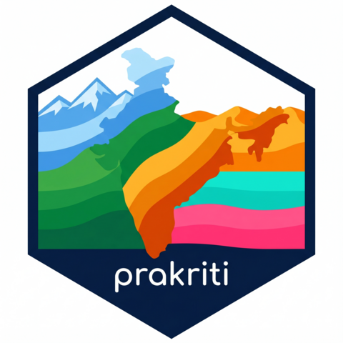

Build a color palette from a prakriti palette
Source: R/palette-fn.R
prakriti_palette.RdReturns a character vector of hex codes drawn from one of the named palettes
in prakriti_palettes. Supports both discrete subsetting and continuous
interpolation via grDevices::colorRampPalette().
Usage
prakriti_palette(
name,
n = NULL,
type = c("discrete", "continuous"),
direction = 1
)Arguments
- name
Character. Name of the palette. See
prakriti_names().- n
Integer. Number of colors to return. If
NULL(default), returns the full base palette unchanged.- type
Either
"discrete"(subset / recycle base colors) or"continuous"(interpolate smoothly across the base colors).- direction
1(default) or-1to reverse the palette order.
Examples
prakriti_palette("himalaya")
#> [1] "#FCFEFF" "#A8D8EA" "#3D9BE9" "#1A5FB4" "#0D3B82" "#051B3E"
#> attr(,"name")
#> [1] "himalaya"
#> attr(,"type")
#> [1] "sequential"
prakriti_palette("himalaya", n = 3)
#> [1] "#FCFEFF" "#A8D8EA" "#3D9BE9"
#> attr(,"name")
#> [1] "himalaya"
#> attr(,"type")
#> [1] "sequential"
prakriti_palette("himalaya", n = 50, type = "continuous")
#> [1] "#FCFEFF" "#F3FAFC" "#EAF6FA" "#E2F2F8" "#D9EEF6" "#D1EAF4" "#C8E6F2"
#> [8] "#C0E2F0" "#B7DEED" "#AEDBEB" "#A5D6E9" "#9AD0E9" "#8FCAE9" "#85C4E9"
#> [15] "#7ABDE9" "#6FB7E9" "#64B1E9" "#59ABE9" "#4EA4E9" "#439EE9" "#3B98E6"
#> [22] "#3892E1" "#348CDC" "#3086D6" "#2D80D1" "#2979CB" "#2673C6" "#226DC0"
#> [29] "#1F67BB" "#1B61B6" "#195CB0" "#1759AB" "#1655A6" "#1551A1" "#134E9C"
#> [36] "#124A97" "#114692" "#0F438D" "#0E3F88" "#0D3B83" "#0C387C" "#0B3575"
#> [43] "#0A316E" "#092E67" "#092B60" "#082859" "#072452" "#06214B" "#051E44"
#> [50] "#051B3E"
#> attr(,"name")
#> [1] "himalaya"
#> attr(,"type")
#> [1] "sequential"
prakriti_palette("thar", direction = -1)
#> [1] "#3D0C02" "#8B1A04" "#D94701" "#F57D15" "#FFB727" "#FFF0A3"
#> attr(,"name")
#> [1] "thar"
#> attr(,"type")
#> [1] "sequential"